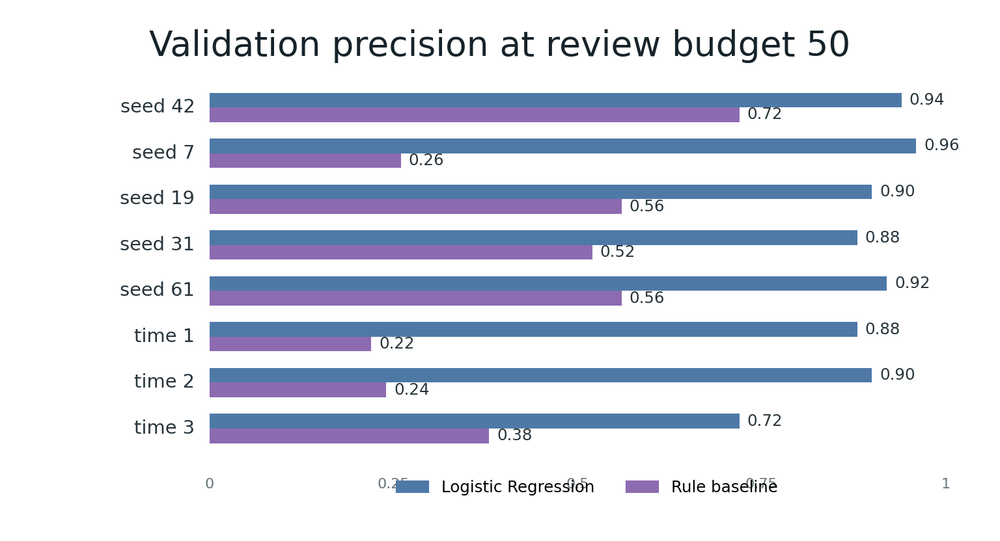
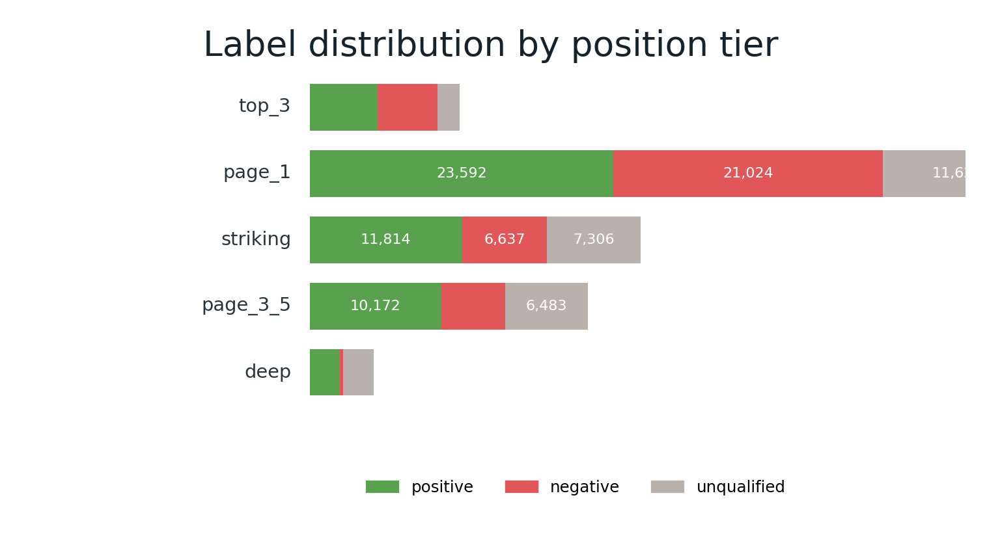
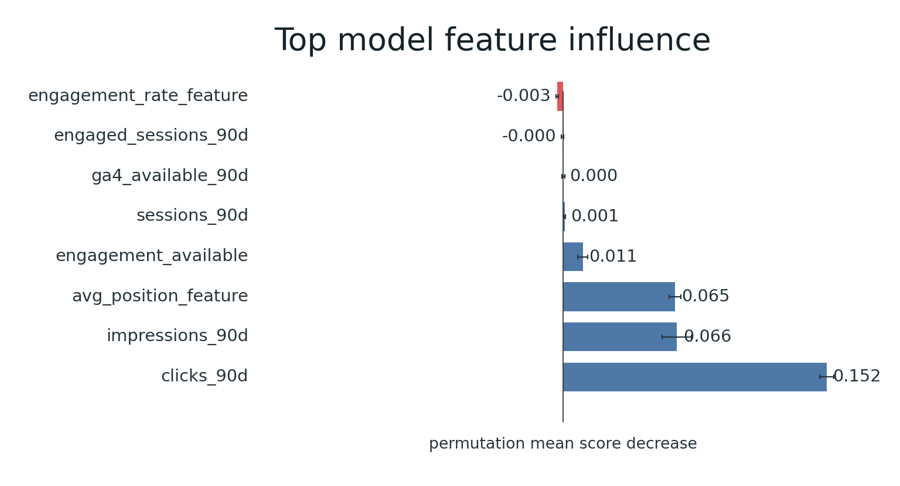
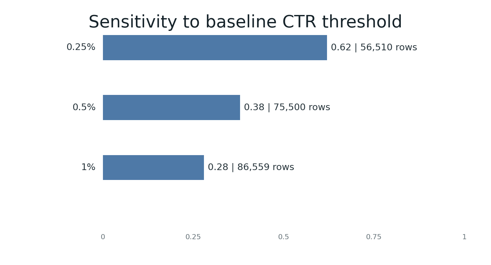
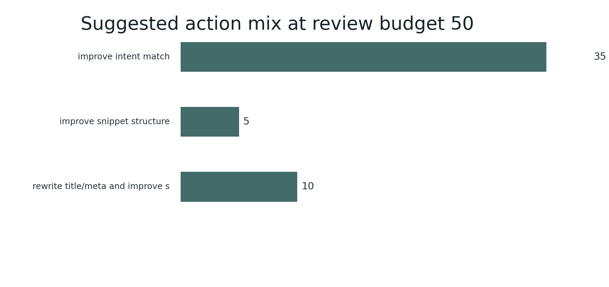
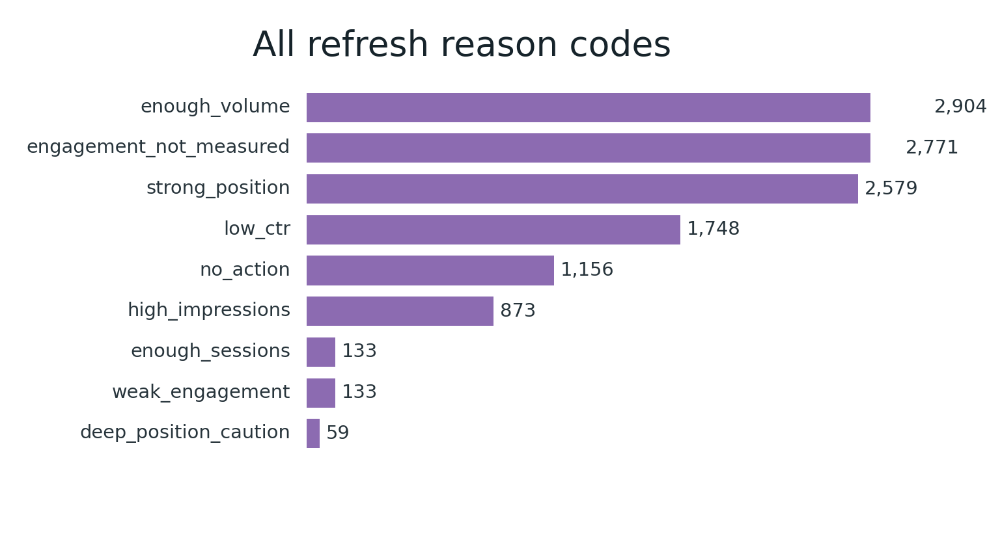
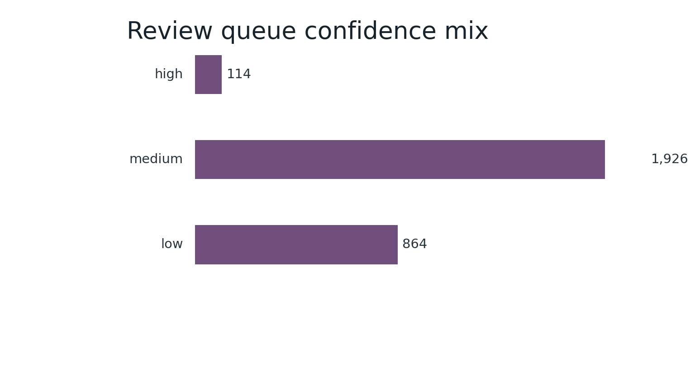

CTR / Engagement Opportunity Scoring
Abstract
This study asks whether a transparent rule and a grouped client-holdout model can rank visible pages that under-capture clicks relative to their search-position tier. It uses the FlyRank internship warehouse, aggregating signals from 2026-01-01 through 2026-03-31 and evaluating 2026-04-01 through 2026-04-30. Logistic regression is compared with a fixed CTR-and-volume rule under the same client-disjoint split and top-50 review budget. On the recorded holdout, logistic regression reached Precision@50 of 0.94 versus 0.72 for the rule; time-aware validation ranged from 0.72 to 0.90. This is decision support for human review, not a causal estimate or automated publishing system.
1. Problem framing
The supported decision is which visible pages under-capture clicks relative to others in the same position tier and are worth review. The unit is one pseudonymized content item at the 2026-04-01 decision point, aggregated by client and content hash. The output is a ranked list with reason codes, supporting signals, confidence notes, and suggested review actions.
A false positive spends scarce review capacity; a false negative leaves a potentially useful candidate unseen. The queue prioritizes review and does not automate edits.
2. Data safety
The analysis uses the FlyRank internship warehouse release and its daily content-performance
fact table. Rows require at least 100 feature-window impressions and 100 label-window
impressions, plus a known position tier. Eight feature-window inputs are used:
clicks_90d, impressions_90d, avg_position_feature,
sessions_90d, engaged_sessions_90d,
engagement_rate_feature, ga4_available_90d, and
engagement_available.
Future-window fields, trend fields, product/provider flags, client IDs, and content IDs are excluded from score inputs. Pseudonymous IDs are used only for joins and grouped splits. The public queue omits client and content identifiers.
3. Baseline and model
The baseline flags feature CTR below 0.5% when feature impressions are at least 100 and a valid position tier exists, then ranks by feature impressions. Logistic regression provides a compact, inspectable ranking score. The target is 1 when future-window CTR is below half of the feature-window position-tier expected CTR, subject to the volume floors.
Random forest is reported as a secondary comparison. None of the models use identifiers, future fields, trend fields, or product/provider flags.
4. Evaluation and results
The primary split is grouped by client with seed 42 and a 20% test size: 87,846 training rows across 33 clients and 2,904 held-out rows across 9 clients, with zero client overlap. The eligible-population base rate was 0.5856.
| Method | P@10 | P@20 | P@50 | Macro P@50 |
|---|---|---|---|---|
| Logistic regression | 0.90 | 0.95 | 0.94 | 0.63 |
| Random forest | 1.00 | 1.00 | 0.92 | 0.64 |
| ML-07 rule baseline | 0.70 | 0.75 | 0.72 | 0.54 |
Five grouped seeds produced logistic-regression P@50 of 0.88–0.96; time-aware validation produced 0.72–0.90. Error review found false positives and false negatives near the review boundary, supporting human review of disagreements.


5. Interpretation
Logistic regression outperformed the rule at the row-weighted top-50 budget, while random
forest had slightly higher client-balanced Macro P@50. The learned model is therefore not
uniformly superior under every aggregation. Permutation influence was largest for
clicks_90d, followed by impressions_90d and
avg_position_feature; this is ranking influence, not causality.


6. Limitations
- The grouped holdout is client-disjoint but not a randomized experiment.
- Time-aware P@50 varied from 0.72 to 0.90, so performance may shift across periods.
- The eligible population is filtered by future-window impressions.
- The queue depends on measurable impressions, CTR, and position context.
- Missing engagement data is a caution, not evidence of poor content.
- The model ranks candidates; it does not infer intent or business impact.
7. Ranked recommendations
- Review the first 50 rows per cycle, keeping reason and confidence fields together.
- Confirm volume, CTR denominator, position context, title, snippet, intent, and technical status.
- Prioritize title/meta and snippet review for high-volume, strong-position, low-CTR rows.
- Record evidence and reviewer confidence, then re-measure after a defined window.
- Recheck base rate and P@50 each period; retrain only after time-aware validation preserves feature/label separation.
No-go: Do not auto-publish edits, use the queue for personnel evaluation, or infer causality, intent, quality, or business impact from the score alone.



8. Reproducibility
The committed capstone notebook reads the
committed ML-07, ML-08, and ML-09 metric receipts. The
ML-10 action playbook documents review
rules. The grouped split uses seed 42 and a 20% test size. Warehouse access requires the
configured HF_TOKEN; it is never stored in the repository.
9. Acknowledgments and data credit
Built on the FlyRank ML Internship dataset.
ML-12 closing package
Five-minute demo: Explain the review decision and safety boundary; show the windows and leakage checks; compare the baseline and model; show the queue and checklist; close with validation ranges and limitations.
Social post: Built a public-safe ranking aid for SEO review. Logistic regression reached observed grouped-holdout P@50 of 0.94 versus 0.72 for a transparent rule; time-aware validation ranged from 0.72 to 0.90. It prioritizes human review and does not claim edits cause recovery.
Employer summary: Built a reproducible CTR opportunity-scoring workflow on the FlyRank internship warehouse. Compared a transparent baseline with logistic regression using grouped and time-aware validation, leakage checks, public-safe exports, and an action playbook.